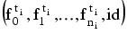

|
|
|
7.6.2 Adding and removing blocking fields
For each blocking configuration c with fields
, where all
are on table ti and the main id is id, create for all i the indices .
The blocking plugin contains a counts cache that keeps all counts in memory. Sharing of counts across production models is supported.
For blocking in the ModelMaker matcher (Chapter II.12), both the exact and the automated blocking algorithm allow the choice of the configurations to be used. Figure 70 shows the GUI, which is part of the matcher dialog.
|
|
ChoiceMaker Technologies http://www.choicemaker.com Voice: (212) 905-6030 Fax: (212) 331-1106 info@choicemaker.com |